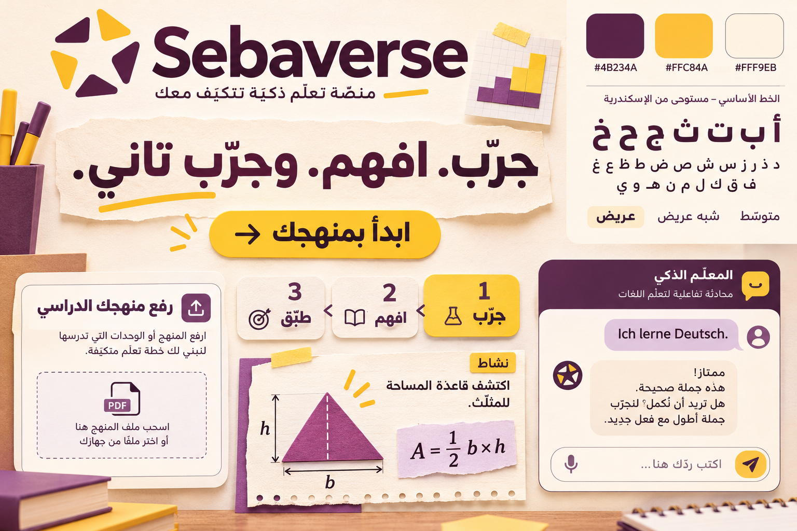

Sebaverseتجربة هوية بصرية — ورشة الفهمجرّب. افهم. وجرّب تاني.
هنقسم الدرس لأجزاء صغيرة. تجرّب بنفسك، وتاخد مساعدة وقت ما تحتاجها.
ابدأ بمنهجككل محاولة بتفتح فهم جديد.
تصوّر مقترح للمراجعة. الخط المعروض هنا خط جهاز بديل؛ اختيارات الخطوط موثقة في الإرشادات ولم يتم تحميلها.
الألماني · تدريب مستقلنبدأ بمثال جديد؟
رتّب الجملة، وبعدها راجع إجابتك.
Ich lerne Deutsch.
المحاولة دي ورّتنا الجزء اللي محتاج تدريب. تحب تلميح صغير؟
ملخص لولي الأمر
اتدرّبت على تكوين الجملة، وبعد الشرح حلّت مثالًا جديدًا باستقلالية. النشاط القادم يراجع نفس المهارة بصياغة مختلفة.
التصور البصري

التفاصيل والأصول
إرشادات الهوية الكاملة · قيم التصميم القابلة للتعديل
نموذج محلي لقراءة الاتجاه العربي واختبار التسلسل البصري، وليس تطبيقًا منفذًا أو هوية معتمدة.